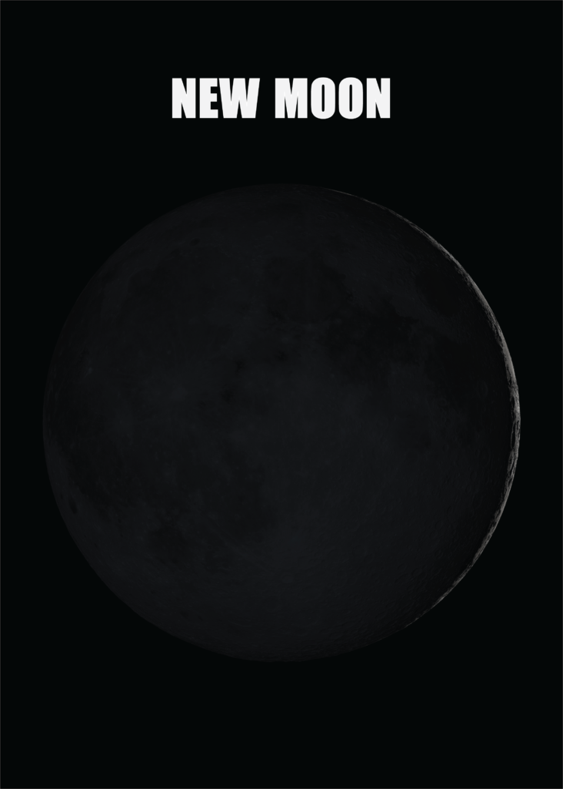
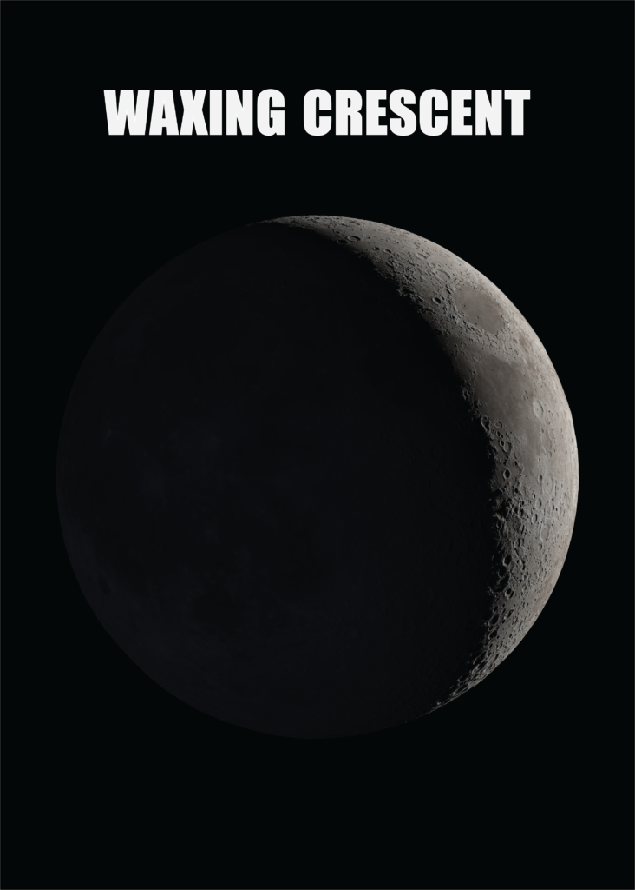
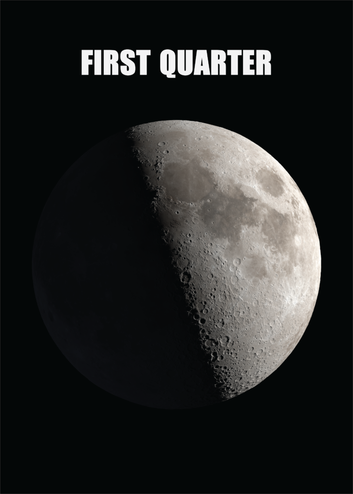
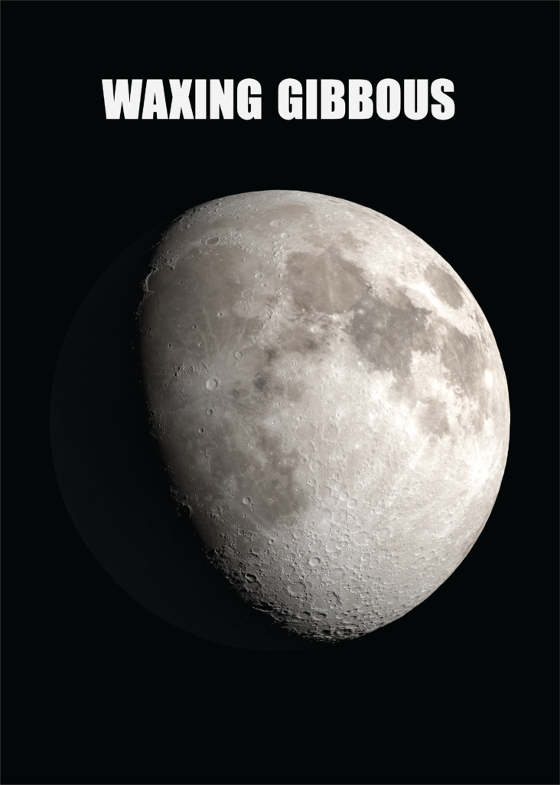
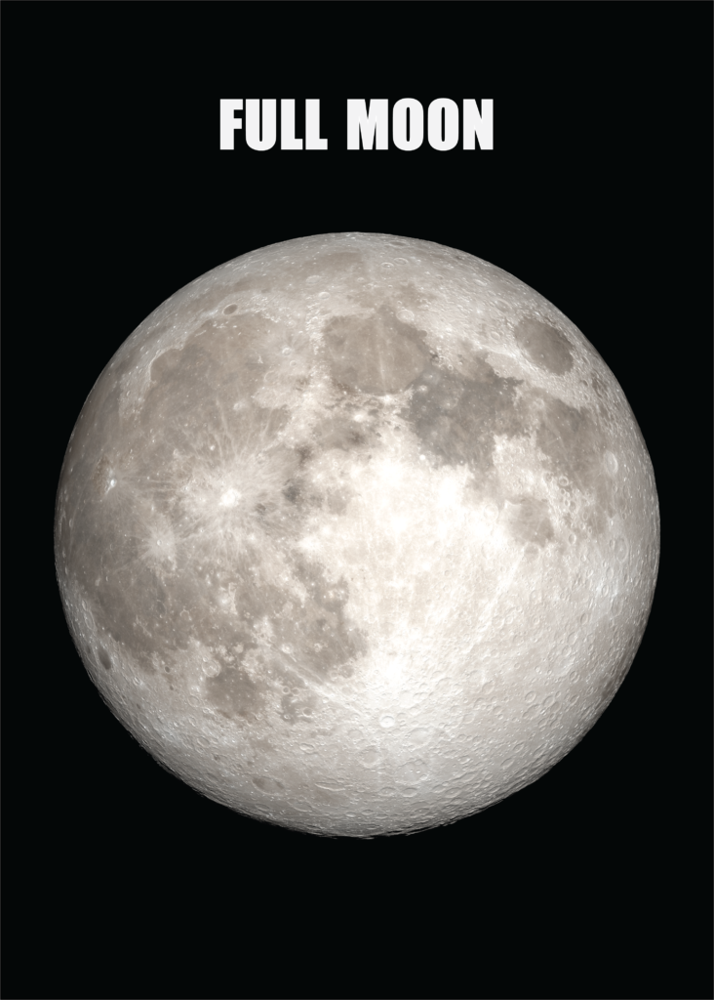
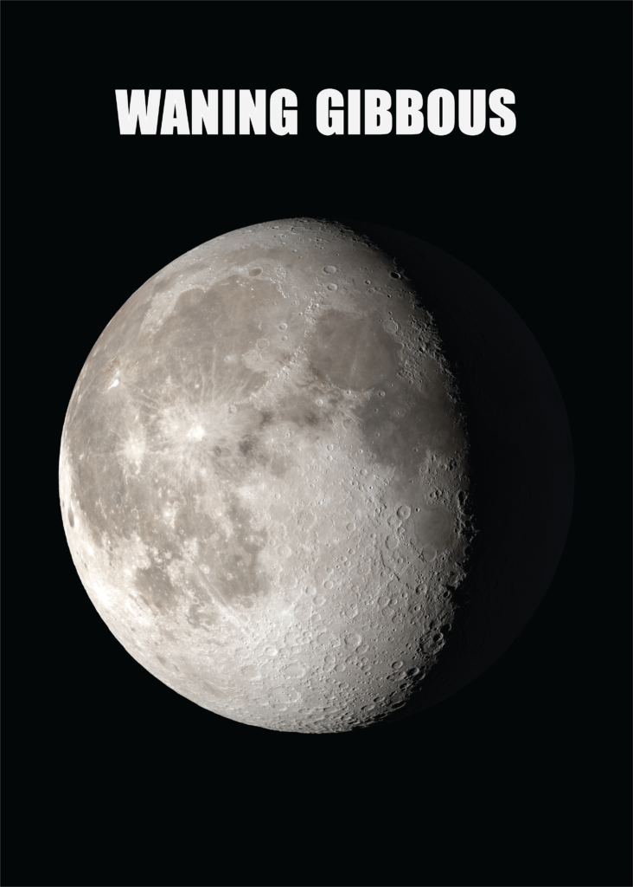
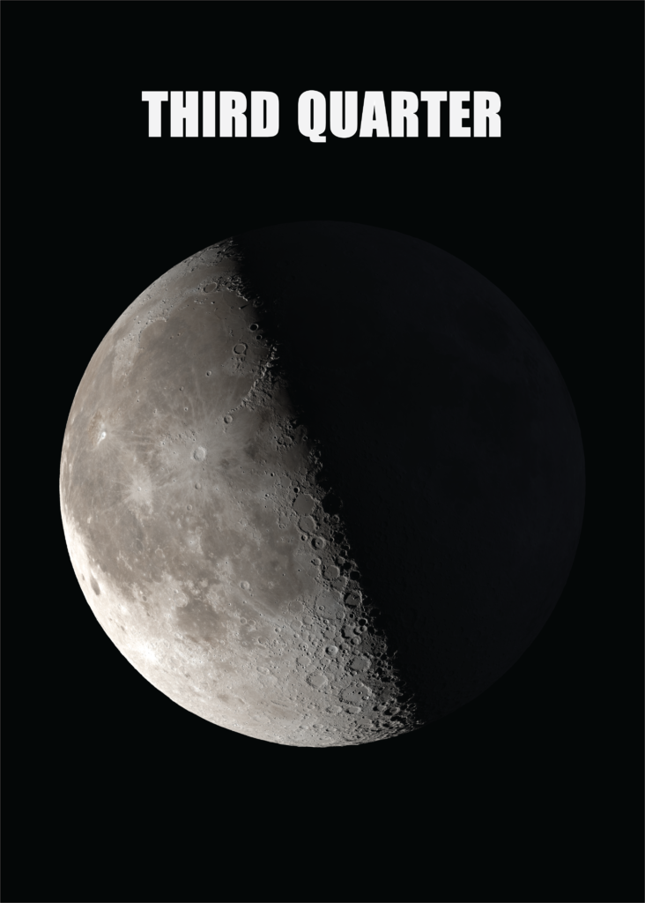
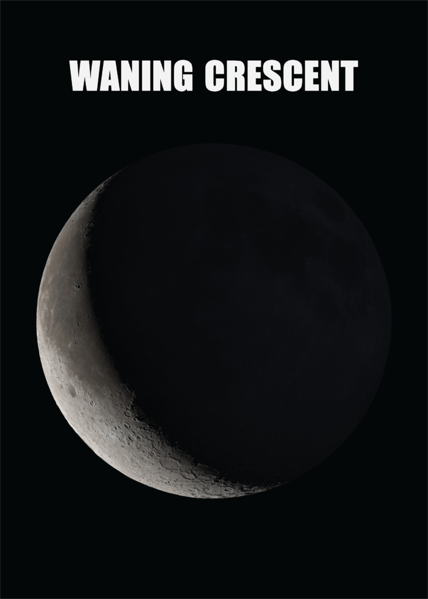

| Phase | Appearance | Illumination | Visibility | |
|---|---|---|---|---|
| Moon Image | Description | |||
| New Moon |  | No visible moon | 0% | Not visible |
| Waxing Crescent |  | Thin Crescent Shape | 1-49% | Visible during the evening |
| First Quarter |  | Half-illuminated | 50% | Visible during the evening |
| Waxing Gibbous |  | Mostly illuminated | 51-99% | Visible during the night |
| Full Moon |  | fully illuminated | 100% | Visible during the night |
| Wanning Gibbous |  | Mostly illuminated | 51-99% | Visible during the night |
| Third Quarter |  | Half-illuminated | 50% | Visible during the morning |
| Wanning Crescent |  | Thin crescent shape | 1-49% | Visible during the morning |
The new moon is the lunar phase when Moon is not visible from Earth. It marks the beginning of the lunar cycle
The waxing crescent is the lunar phase when a small portion of the moon is illuminated. It is the first visible phase after the New Moon
The first quarter is the lunar phase when half of the moon is illuminate. It occurs approximately one week after the new moon.
The Waxing Gibbous is the lunar phase when more than half od the moon is illuminated. It is the phase following the First quarter.
The full moon is the lunar phase when the entire Moon is illuminated.It is the brightest phase and occurs approximately two weeks after the New moon
The waning gibbous is the lunar phase when more then half of the moon is illuminated. It follows the full moon and leads o the last quarter.
The Third Quarter is the lunar phase when half of the moon is illuminated.It occurs approximately three weeks after the New moon
The waning crescent is the lunar phase when Moon is not visible from Earth. It marks the beginning of the lunar cycle
Name:Sumaiya Akter Runa
Assignment No:03